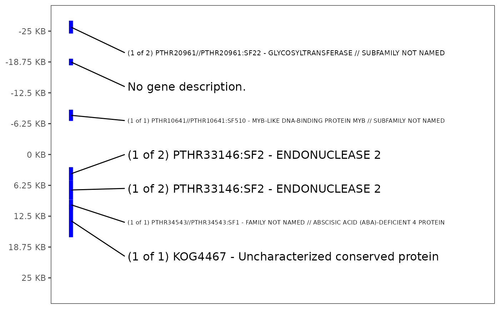

Use a table of genes, descriptions and their start and end points to plot their locations and annotations along the genome.
Usage
plot_gene_annotation(
panvar.table.list = NULL,
annotation.table = NULL,
middle.snp = NULL,
window,
include.id = F,
gene.color = "blue",
highlight.ids = NULL,
highlight.color = "red",
use.arrows = F,
point.color = NULL,
point.fill.scale = NULL,
plot.text.size = 11,
plot.legend.size = 1.2
)Arguments
- panvar.table.list
list, output from make_panvar_tables. Provide either this list or both annotation.table and middle.snp.
- annotation.table
table with annotations with columns (geneID, CHR, start, end, annotation). start and end correspond to base-pair coordinates of start and end of gene. CHR is chromosome of gene.
- middle.snp
character, SNP name in form "CHR-POS" center of window. Often the key.snp output of get_ld_in_window
- window
integer, kilobases on either side of middle.snp to plot
- include.id
boolean, include geneID in gene annotations or not
- gene.color
character, color to plot genes
- highlight.ids
character, optional, vector of ids to highlight
- highlight.color
character, optional, color to highlight ids
- use.arrows
boolean, if TRUE, use gggenes::geom_gene_arrow to draw representations of genes. If the direction is encoded in another variable, supply that to
- point.color
character, variable in annotation.table that indicates how to color points plotted next to gene descriptions. If not supplied, no points are plotted. The input "LD" is reserved to give functionality to plot_panvar. If used, legend will not be displayed.
- point.fill.scale
ggplot2 scale object, a fill scale to customize how point.color is displayed.
- plot.text.size
numeric, numeric, size of text in plot.
- plot.legend.size
numeric, size of legend. Passed to ggplot2::theme,
legend.key.size.
Examples
# organize options
tag.snp <- "Chr_05-6857045"
gwas.df <- read.csv(system.file(
"extdata",
"PanvarExample_GLM_GWASresults.csv",
package = "panvaR"))
annotation.table <- read.csv(system.file(
"extdata",
"Setaria_shattering_annotation.csv",
package = "panvaR"))
plink.path <- bigsnpr::download_plink2()
temp.dir <- file.path(tempdir(), "panvar_ex")
dir.create(temp.dir, showWarnings = FALSE)
geno.bed.filename <- "Setaria_shattering_example_pruned.bed"
geno.bed.directory <- system.file("extdata", package="panvaR")
# make input tables
tables <- make_panvar_tables(
gwas.res = gwas.df,
tag.snp = tag.snp,
annotation.table = annotation.table,
plink.path = plink.path,
pvals.in.log = F,
geno.bed.filename = geno.bed.filename,
geno.bed.directory = geno.bed.directory,
window = 25,
temp.dir = temp.dir,
compute.scores = FALSE,
snp.to.gene.buffer = 0)
#> Calculating LD
#> Generating snp to gene correspondence
# make plot
plot_gene_annotation(
panvar.table.list = tables,
window = 25)

# clean up
unlink(temp.dir, recursive = TRUE)